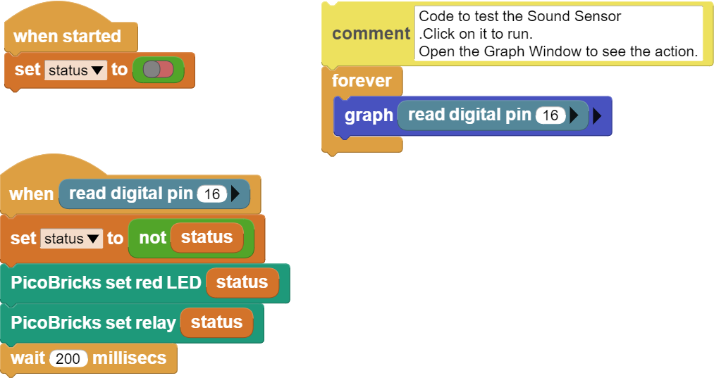

Magic Lamp¶
Introduction¶
In this project, we will turn a lamp we use at home on and off with sound. In our project, which we will build using the Picobricks sound level sensor, we will perform the on-off operations by making a clap sound. As in the previous projects, in projects where sensors are used, before we start to write the codes, it will make your progress easier to see what values the sensor sends in the operations we want to do by just operating the sensor, and then writing the codes of the project based on these values.
Project Details and Algorithm¶
Most of us have seen lamps flashing magically or doors opening and closing with the sound of clapping in movies. There are set assistants who close these doors and turn off the lamps in the shootings. What if we did this automatically? There are sensors that convert the sound intensity change that we expect to occur in the environment into an electrical signal. These are called sound sensors. In this project, you will learn how to use the Relay module and sound level sensor with Picobiricks, as well as to control the status while preparing a lighting lamp assembly that can flash with clap.
In this project, we will first read the MicroBlocks say123 block sound intensity sensor values and determine the amount of sound required for the lamp to turn on and off. Then, when this sound level is reached, we will open the relay on the Picobricks and make the lamp connected to the relay light up. Relays can control 220 volt alternating current by turning it on and off. We will again use the sound sensor data to turn the opened lamp back off. Here, we need to use a variable for the lamp to turn on when off and turn off when it is on, with the same amount of sound.
Wiring Diagram¶

{kind=link}
You can program and run Picobricks modules without any wiring. If you are going to use the modules by separating them from the board, then you should make the module connections with the Grove cables provided.
MicroPython Code of the Project¶
from machine import Pin #to access the hardware on the pico
sensor=Pin(1,Pin.IN) #initialize digital pin 1 as an INPUT for Sensor
led=Pin(7,Pin.OUT)#initialize digital pin 7 as an OUTPUT for LED
while True:
#When sensor value is '0', the relay will be '1'
print(sensor.value())
if sensor.value()==1:
led.value(1)
else:
led.value(0)
Truco
Ifyou rename your code file to main.py, your code will run after every boot.
Arduino C Code of the Project¶
void setup() {
// put your setup code here, to run once:
pinMode(1,INPUT);
pinMode(7,OUTPUT);
//define the input and output pins
}
void loop() {
// put your main code here, to run repeatedly:
Serial.println(digitalRead(1));
if(digitalRead(1)==1){
digitalWrite(7,HIGH);
delay(3000);
}
else{
digitalWrite(7,LOW);
delay(1000);
}
}
Coding the Project with MicroBlocks¶
 |
Nota
To code with MicroBlocks, simply drag and drop the image above to the MicroBlocks Run tab.